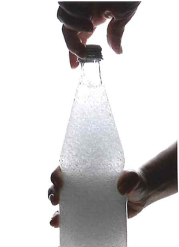
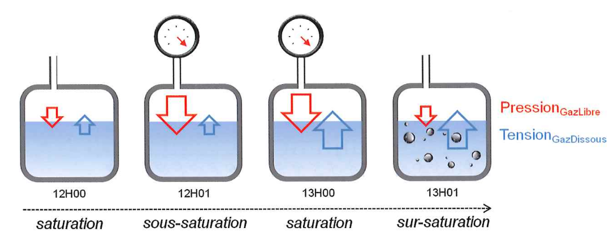

Nous simplifierons en considérant que l'air est composé de 20% d'O₂ et 80% de N₂
1 litre d'air contient 80% d'azote et 20% d'oxygène
Quelle est sa pression totale à la pression atmosphérique ? 1 bar
Quelle est la pression partielle d'Azote ? 0.8 bar
Quelle est la pression partielle d'Oxygène ? 0.2 bar
Enoncé de la loi:
"A température constante, la pression absolue d'un mélange gazeux est égale à la somme des pressions partielles qu'auraient ces gaz s'ils occupaient seuls le volume total"
Formules:
$P _{tot} = P_{g1} + P_{g2} + ... + P_{gn}$
$P _{Pgaz} = P_{abs} * \%_{gaz}$
Soit un mélange d'air (80/20), quels sont les pressions partielles des gaz aux profondeurs données ?
| Profondeur | Pression totale | Pression Azote | Pression Oxygène |
|---|---|---|---|
| 10 m | 2 bar | 1.6 bar | 0.4 bar |
| 30 m | 4 bar | 3.2 bar | 0.8 bar |
| 40 m | 5 bar | 4 bar | 1 bar |
Quels sont les conséquences pour le plongeur ?
Quand un gaz est mis en présence d'un liquide, il se produit un phénomène de dissolution.
La quantité de gaz dissoute dans un liquide dépend de plusieurs critères:
Que se passe-t-il lorsque l'on débouche une bouteille d'eau gazeuse ?
Quelques notions:
Les différents états d'un liquide:
Enoncé de la loi:
"A température constante et à saturation, la quantité d'un gaz donné dissoute dans un liquide donné est directement proportionnelle à la pression exercée par le gaz à la surface du liquide."
Le processus de saturation (et de désaturation) prend du temps, un gaz ne sera pas dissout instantannément dans un liquide.
On considère que la Période est le temps nécessaire pour atteindre une demi saturation et que la saturation est atteinte après 6 périodes.
Réprésentation du temps de saturation d'un gaz dans un liquide
Quels sont les applications à la plongée ?
Alors qu'il était à saturation, Un plongeur se retrouve à 40m...
Quel sera la pression d'azote ? 4 bar
Quel sera la tension d'azote ? 0.8 bar
Quel sera la tension après chaque période ?
| Période | Pression Azote | Tension Azote |
|---|---|---|
| P1 | 4 bar | 2.6 bar |
| P2 | 4 bar | 3.3 bar |
| P3 | 4 bar | 3.65 bar |
| P4 | 4 bar | 3.825 bar |
| P5 | 4 bar | 3.9125 bar |
| P6 | 4 bar | 3.95625 bar |
La tension va augmenter progressivement pour tendre vers l'équilibre.
Que se passe-t-il lorsque le plongeur remonte ? supposons qu'après avoir séjourné l'équivalent de 3 périodes à 40m, il se retrouve à 2m50 ...
Quel sera la pression d'azote ? 1 bar
Quel sera la tension d'azote ? 3.65 bar
Quel sera la tension après chaque période ?
| Période | Pression Azote | Tension Azote |
|---|---|---|
| P1 | 1 bar | 2.325 bar |
| P2 | 1 bar | 1.6625 bar |
| P3 | 1 bar | 1.331 bar |
| P4 | 1 bar | 1.166 bar |
| P5 | 1 bar | 1.083 bar |
| P6 | 1 bar | 1.041 bar |
La tension va diminuer progressivement pour tendre vers l'équilibre.